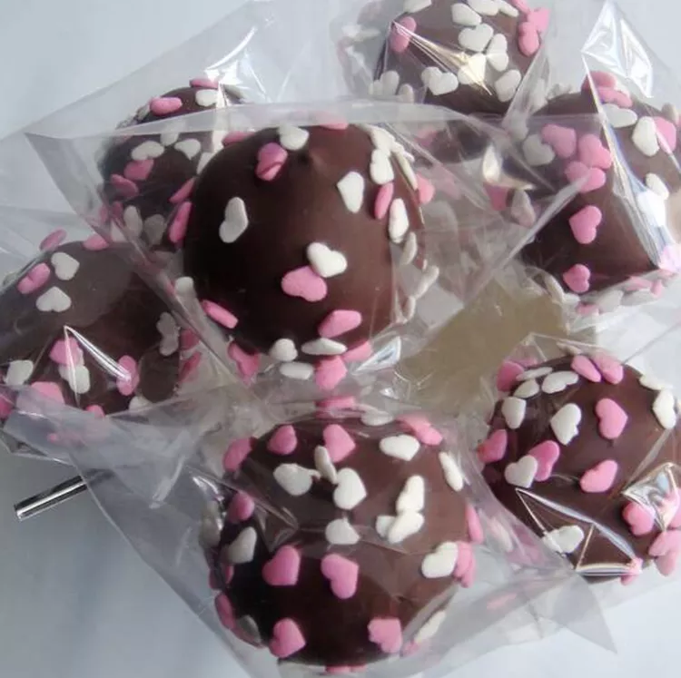

Peanut Butter Balls

Peanut butter balls are always a good idea — and this top-rated recipe is all the proof you need.
The recipe for these peanut butter balls was shared by my 96-year-old neighbor, Mrs. Lucille Savage. She still
makes them at Christmas and now I do too.
Peanut butter balls are always a crowd-favorite with a hardened chocolate coating and a smooth, creamy,
melt-in-your-mouth peanut butter filling. This recipe delivers an unexpected, but delightful crunch, thanks to the
addition of crisp rice cereal.
Ingredients:
- Peanut Butter
- Butter
- Sugar
- Rice Cereal
- Chocolate Chips
Directions
- Melt the peanut butter and butter in a saucepan. Mix the sugar and cereal together, then stir the cereal mixture
into the peanut butter mixture.
- Form the mixture into balls, cover, and refrigerate until firm.
- Melt the chocolate in a double boiler. Coat the peanut butter balls in the melted chocolate. Refrigerate until
the chocolate is firm.
Back to the Top
Return to Main Page